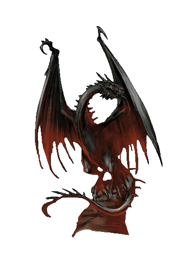

| Übersicht,
Anschläge und Stammtisch (RPG) |
|
Exodus Aquileia
|
Vincent Diao
  |
An Abend diese kalten aber trocknen Dunkelfrostabend treffen sich die Bürger von Aquileia auf dem Marktplatz. Schon seit Tagen laufen die Vorbereitungen für diese Nacht. Vincent Diao ist bereits dort und begrüßt viele der Bürger persönlich zu diesem letzten Treffen.
"Freunde und Weggefährten. Es ist jetzt ein Jahr her, dass wir hier begonnen haben den Ruinen von Esturia Nova neues Leben einzutauchen. Gerade mal 50 verlorene Siedler bewohnten damals diese einst große Stadt.
Das war eine sehr gute Leistung von Euch! Überall verfallen Städte zu Dörfern oder werden sogar von den wilden Monster zerstört.
Aber nun warten größere Aufgaben auf uns. Es ist Zeit weiter zu ziehen, denn Gloria benötigt unsere ganz Kraft um die Metropole zu retten. Dort wollen wir unser neues Heim aufschlagen."
Er gibt den Katapulten ein Zeichen sich bereit zu machen.
"Wir werden hier niemanden zurücklassen und auch keine Unterschlupf für die zahlreichen Monster der Scherben zurücklassen! Brechts auf und scheut einer glorreichen Zukunft entgegen."
Schnell und diszipliniert werden die letzten Habseligkeiten auf den Wagen, Packeseln und Pferden verstaut. Schnell leer sich der Marktplatz als die Karawane nach Osten aufbricht. Als letzter steht Sao mit seinen treuesten Gefährten auf dem Marktplatz.
Dann ist es so weil. Die Katapulten nehmen maß und auf sein Zeichen beginnt das Bombardement der verlassen Siedlung.
Bereits kurz danach ist es vorbei.
4.03.2015 23:04 Zerstörung Vincent Diao hat Aquileia niedergebrannt!
Sir Vincent Diao,
Anführer der glorreichen Nation "Templer"
Zur 22. Stunde am 46.Dunkelfrost im Jahre 462 |
04.03.15 23:05
 |
|
Hippie Hasenfutter
  |
Ähm, nein. Aber er kann es ja nochmal versuchen.
Junker Hippie Hasenfutter,
Vorsteher von Quell der Hoffnung,
Anführer der glorreichen Nation "Ex Occidente Spes"
Zur 15. Stunde am 46.Dunkelfrost im Jahre 462 |
05.03.15 21:17
|
|
Falaron Talgrund
  |
Doppelt hält besser.
Freiherr Falaron Talgrund,
Vorsteher von Castello el Ferror
Zur 16. Stunde am 46.Dunkelfrost im Jahre 462 |
05.03.15 21:40
|
|
Priboi
  |
Das ist ja ärgerlich, aber wie kann der Beitrag hier stehen ?^^
Sippenführer Priboi,
Vorsteher von Dornburg
Zur 19. Stunde am 46.Dunkelfrost im Jahre 462 |
05.03.15 22:19
|
|
Jolianka Thwynfyl
 |
Ich vermute Paktiererei dahinter. Wer so schreckliche Ereignisse wie die Zerstörung von Städten voraussehen kann, muss mit den Absieben im Bunde sein.
Freifrau Jolianka Thwynfyl,
Vorsteherin von Caput Spei
Zur 1. Stunde am 47.Dunkelfrost im Jahre 462 |
05.03.15 23:47
|
|
Baldur McMulenberc
  |
Verbrennt sie alle!
Baron Baldur McMulenberc,
Vorsteher von Drachenburg,
Anführer der glorreichen Nation "Dis iratis natus",
Sinyas Alptraum
Zur 6. Stunde am 47.Dunkelfrost im Jahre 462 |
06.03.15 0:50
|
|
Übersicht,
Anschläge und Stammtisch (RPG)
|